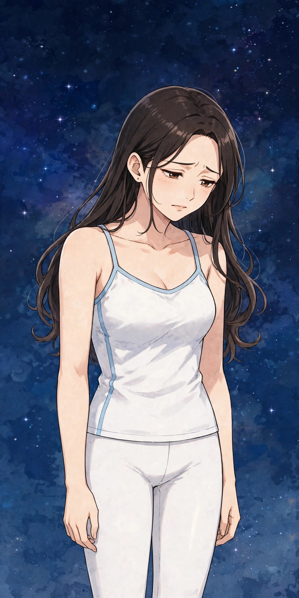

京都で正月疲れに気になる体のだるさ｜要因の整理とセルフケア、受診の目安

正月が明けて、いつもの生活に戻ったはずなのに、体が重く、なんとなくだるさが抜けない。朝起きてもすっきりせず、昼間も体が重い——。そんなふうに感じることはありませんか。年末年始は、夜更かしやごちそう、初詣や帰省の移動など、ふだんとは違う過ごし方が重なる時期です。このコラムでは、正月疲れにともなう体のだるさについて、一般的な解説と要因の整理、正月明けの過ごし方とセルフケア、受診の目安をお伝えします。なお、全身の疲労感そのものについては、コラム「京都で気になる全身の疲労感｜要因の整理とセルフケア、受診の目安」でも取り上げています。
正月疲れに気になる体のだるさとは
「体のだるさ」は、体全体が重く感じられる、力が入りにくい、動くのがおっくうに感じられるなど、全身の不快感を表す一般的な言い方です。それ自体が病名というわけではなく、感じ方も人それぞれで、朝起きたときに強く感じる方もいれば、夕方になるほど重くなる方もいます。肩や腰など特定の場所ではなく、「体全体が重い」と感じるのが特徴とされます。
正月明けのだるさは、休みのあいだは表に出にくく、仕事や学校が始まってから気づくこともあります。休み中はゆっくりしていたはずなのに、日常に戻ったとたんに体が重い、午前中はなんとか動けても午後になるとだるさが増す、といった現れ方をする方もいます。様子を見るときは、「いつからだるさを感じるか」「休むとどう感じるか」「ほかに気になる変化はないか」の三つを目安にしてみてください。
正月に重なりやすい要因
正月疲れのだるさの背景には、一つの原因ではなく、年末年始の過ごし方がいくつか重なっていることがあります。次のようなものが挙げられます。いずれも断定ではなく、ご自身の年末年始を振り返るための整理としてご覧ください。
まず挙げられるのは、夜更かしと、寝る時刻・起きる時刻のずれです。大みそかの夜は遅くまで起きている方も多く、三が日も夜更かしが続くと、眠る時間が短くなったり、寝る時刻が日によって大きくずれたりします。眠りのリズムが乱れた日が重なると、朝のだるさとして表に出やすくなります。夜の寝つきについては、コラム「京都で夜に気になる寝つきと疲労感｜旅の後の夜の過ごし方と受診の目安」も参考にしてみてください。
食事の時間と内容の乱れも考えられます。おせちやごちそうを囲む日が続き、食べる時刻もふだんより遅くなりがちです。夜遅くにたくさん食べる日が続くと、胃の重さとともに翌朝のだるさを感じる方もいます。お酒を飲む機会が増える方もいて、眠りが浅くなりやすいとされます。
初詣や帰省の移動も挙げられます。京都では、初詣で神社仏閣へ向かう人出が多く、長い時間歩いたり、境内で並んで待ったりする日もあります。帰省では、電車や車に長時間座りっぱなしの日と、実家で親戚づきあいが続く日が重なります。四条河原町や観光地を歩き回った日も、脚の疲れとともに全身のだるさとして残ることがあります。
寒さとの重なりも考えられます。京都の冬は底冷えする日が多く、初詣の朝や帰り道に冷たい空気の中を歩く日もあります。体が冷えたまま過ごす日が続くと、巡りの滞り感とあわせてだるさを意識する方もいます。体のだるさのケアについては、「京都で体のだるさケア｜寝ても抜けない全身の重さに」もあわせてご覧ください。
年末年始の予定そのものの連続も挙げられます。大掃除や買い出し、年越しの準備から始まり、年明けは初詣や親戚づきあい、新年のあいさつ回りと、休みのあいだも予定が詰まったままの方もいます。体を休ませる日が取りにくいまま日常に戻ると、疲れを持ち越した状態で新しい一週間を迎えることになります。
正月明けの過ごし方とセルフケア
正月明けのセルフケアは、乱れたリズムを少しずつ日常へ戻していくことが中心です。試しやすいものを挙げます。
まず、起きる時刻をそろえることから始めてみてください。休みのあいだに遅くなった起床時刻を、一気に早めるのではなく、少しずつ普段の時刻へ近づけていく方法もあります。朝はカーテンを開けて光を浴び、軽くでも朝食をとるようにしてみてください。
日中に軽く体を動かすことも挙げられます。鴨川沿いの散歩や、買い物のついでに歩く、肩や背中をゆっくり伸ばすなど、小さな動きを日中にはさむ方もいます。急に激しい運動を始めるのではなく、歩く時間を少しずつ増やしていくのが無理のない方法です。
体を温める時間も取り入れてみてください。湯船にゆっくりつかる、温かいお茶を飲む、首や足首まわりを温める、といった工夫が挙げられます。食事は、ごちそうの続きから少しずつふだんの内容へ戻し、野菜や温かい汁物を入れる、夜遅くの食事を控えめにする、といった見直しも挙げられます。
仕事始めの通勤では、荷物の重さと歩く距離にも目を向けてみてください。年末年始の買い物の荷物や、持ち帰ったお土産などが重なると、肩や背中の負担として感じる方もいます。荷物は両手に分ける、リュックを使う、駅ではエスカレーターやエレベーターを利用する、といった工夫も挙げられます。
正月明けの一週間は、予定を詰め込みすぎないことも大切です。仕事始めの週は、夜の予定を軽くして早めに休む、昼休みに短い休憩を入れる、といった過ごし方が挙げられます。だるさが残る日は、無理に取り戻そうとせず、休む日を先に決めておくことも一つの方法です。
受診を考える目安
正月明けのだるさの多くは、その時期の過ごし方と関係し、日常のリズムが戻るにつれて軽くなっていくことも多いとされます。変化が続く・強まる場合は無理をせず、次のような場合は医療機関への受診をご検討ください。強いだるさが2週間以上続く、日に日に強くなる。発熱や体重の変化、息切れや動悸をともなう。食欲がない状態が続く、のどの渇きや排尿の変化が気になる。眠っても疲れが取れず、仕事や日常生活に支障が出ている。気分の落ち込みや意欲の低下が続いている。頭痛が頻繁に起こる、強い、またはいつもと様子が違う。服用中の薬がある、持病の治療中である。
受診の際は、気になり始めた時期（年末年始のどのあたりからか）、感じ方、続いている期間、寝る時刻や食事の時間の変化をメモしておくと伝えやすくなります。当サロンは医療機関ではなく、診断や治療は行いませんので、気になる症状がある場合はまず医療機関へご相談ください。
サロンのご案内 — ステラアルタイル（京都）
ステラアルタイルは、阪急 京都河原町駅・京阪 祇園四条駅からアクセスできる、京都市内の女性専用プライベートサロンです （詳しい住所は、ご予約が確定した方にご案内しています）。 施術は、オイルマッサージと美容整体を組み合わせた構成で、最初にカウンセリングでお体の状態やお悩みをうかがいながら進めます。圧の強さも都度調整します。 夕方17時からの営業のため、お仕事帰りの時間にもご利用いただけます。
基本コースは90分・10,000円（税込）です。営業時間は月曜〜土曜の17:00〜22:00（日曜休み）、完全予約制で営業しています。 なお、現在は近日開院予定のため、ご予約の受付はまだ開始していません。 ご予約の流れは、まずLINE公式アカウントを友だち追加していただき、開院のお知らせをお待ちください。受付開始後に、LINEからご予約いただける形になります。